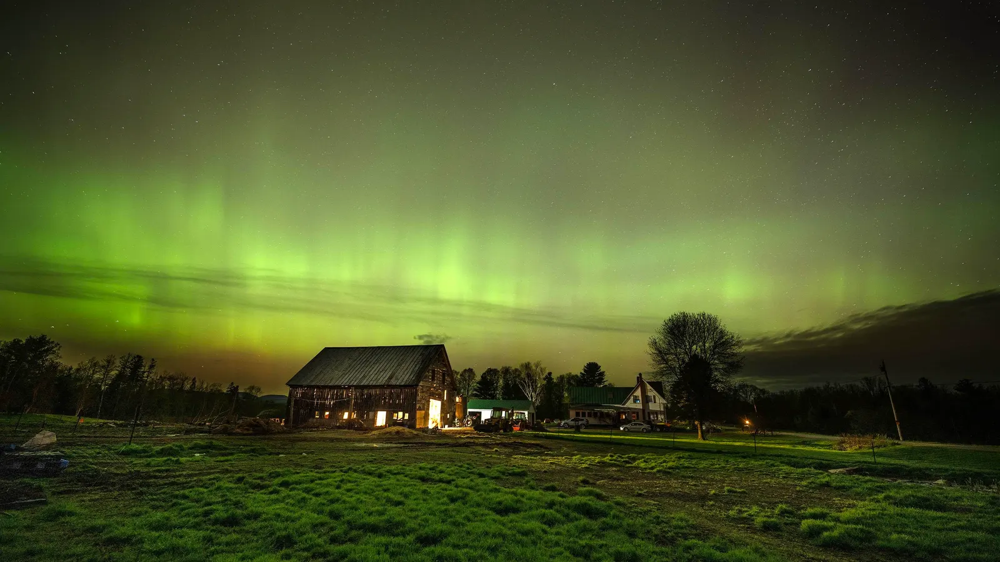

Experiment 2 - Living Impression/Aurora Farm
Reference Image
Description
In this experiment, I am trying to replicate the image of the aurora using procedural generation. I started by creating the barn and windows. I then moved on to generating a certain amount of trees and bushes in their relative location. Lastly I used moving rectangles to create the aurora effect in the dark sky.
Technical
To create the sky I used vertical columns with random placement that move used sine waves. I used millis() to make the motion seem natural like the aurora borealis. I used a horiztonal cutoff and created a solid green field to set the ground. The trees use simple triangle primitives with slight size variations. The bushes are overlapping ellipses and variation to mimic organic shrubs. The barn is created with rect and triangle primitives. I relied on randomness with proper constraints to generate a similar copy of my reference image
Reflection
I was able to modify the code correctly in Glitch to create the generation I wanted. I went through a process of understanding not only random generation but also placement and constraints to make sure that the display portraited the natural image to the best capacity. Moving the code over to my portfolio came with it's own issues. The sizing and scaling was changed because the display needed to fit the size on the website. I manually went in and tweaked the code to better fit the screen by increasing the numbers of certain objects, changing the sizing and spacing. Overall, I think I was able to successfully display a proper generation of my reference image